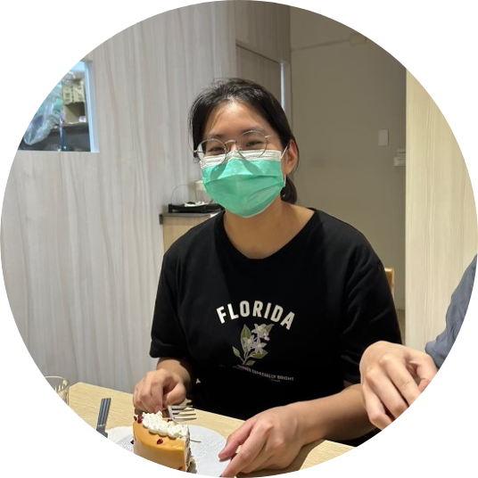
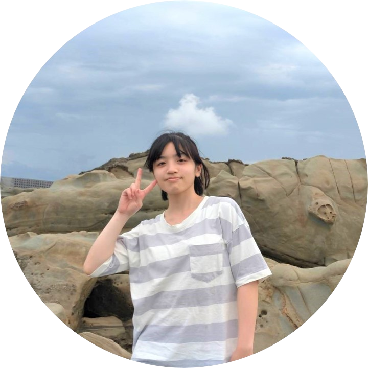
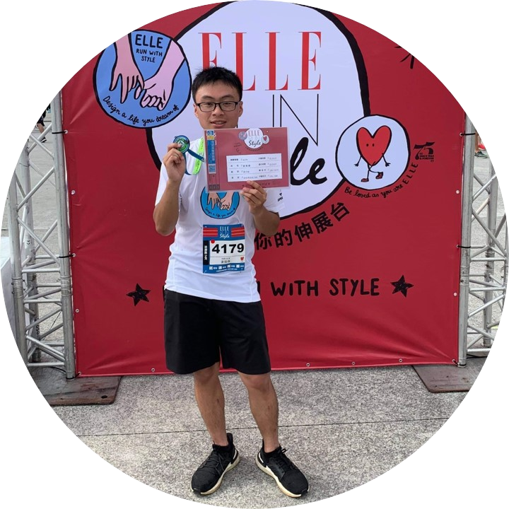
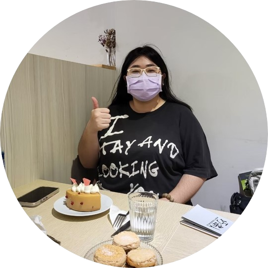
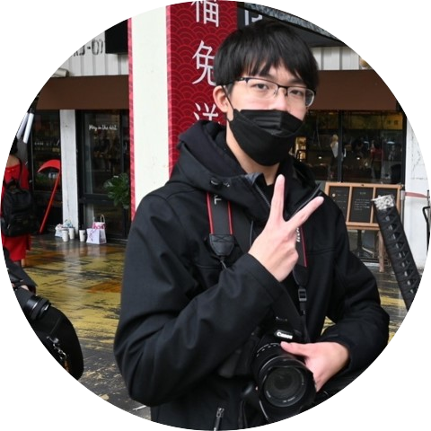

組員資料

陳貞
資管四甲 - 10944111
專長：美編、文案
專案的期許：學習很多新東西並在一次次嘗試中逐漸掌握它。

吳岱芸
資管四甲 - 10944122
專長：程式設計、美編、資料分析
專案的期許：學習不同技術並增加管理經歷以精進己身。

姜智森
資管四甲 - 10944128
專長：程式設計
專案的期許：發覺自己能力不足之處，加以改善並努力精進。

徐紀揚
資管四甲 - 10944143
專長：美編
專案的期許：學習新知識，提升現有技能，把握當下。

張鈞量
資管四甲 - 10944153
專長：文書處理、即席演講能力、外語能力
專案的期許：溫故知新，與時俱進；群策群力，學無止境。

李世彥
資管四乙 - 10944239
專長：程式設計、攝影、拳擊
專案的期許：學習新技術，充實自我。